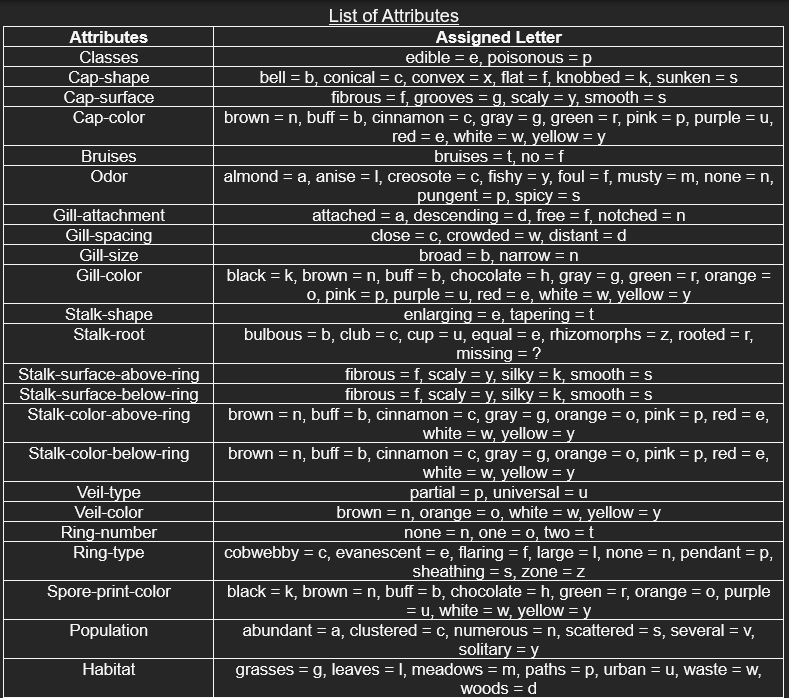
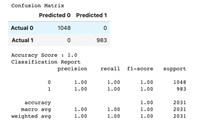
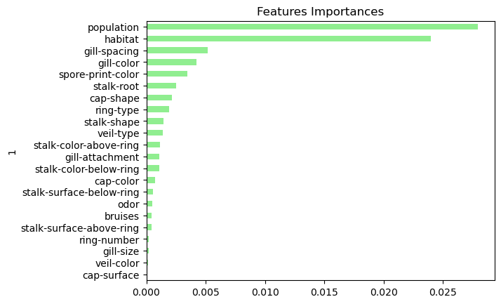
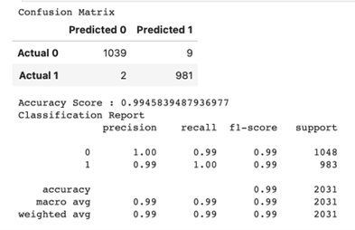
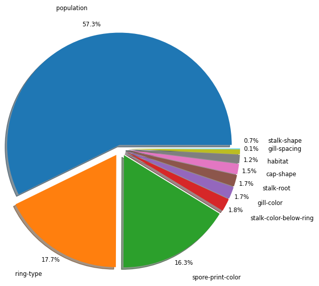

Analysis of Mushroom Data
Special Considerations in the Dataset:
The dataset is comprised of entirely categorical classifications for various attributes of mushroom species. Each species is identified as “definitely edible, definitely poisonous, or of unknown edibility and not recommended (“Mushroom Classification.” Kaggle.com). All attributes are assigned unique letter classifications that determine the different features. For example, on “Cap Shape,” the letter “b” stands for a bell-shaped cap top of the mushroom.
Shape of the Dataset:
The dataset is clearly a supervised learning set with a clear “Class” column that determines whether a mushroom is edible or poisonous. There are 22 features for mushroom attributes.
<<<<<<< HEAD =======The dataset is comprised of entirely categorical classifications for various attributes of mushroom species. Each species is identified as “definitely edible, definitely poisonous, or of unknown edibility and not recommended (“Mushroom Classification.” Kaggle.com). All attributes are assigned unique letter classifications that determine the different features. For example, on “Cap Shape,” the letter “b” stands for a bell-shaped cap top of the mushroom.
>>>>>>> 66a8585ed6e63185b29ac89801e3e06795c433c8List of Attributes:
Two Data Analysis Models: Random Forest and Logistic Regression
We decided to use two different models to analyze our data. We selected random forest and logistic regression. The reasoning behind this was to see if the data would be better fitted to one or the other.
Random Forest Model
Model chosen was the Random Forest due to its strength and robust nature regarding various categorical classifications that would lead to a “yes” or “no” decision, or a “True” or “False” decision making process, ie: If a mushroom had a certain attribute, yes or no.
First Random Forest Model
The first Random Forest model was ran with all 22 features and then an analysis was conducted via confusion matrix, accuracy score testing, and feature importance ranking.
The table below shows the results of the feature importance ranking.
Second Random Forest Model
A second Random Forest model was ran to optimize the results. We utilized the OnehotEncoder for the X Matrix and LabelEncoder for the Y Label. Both are needed to maintain attribute integrity and correctly convert the categorical values to numerical inputs. The optimized model utilized the top 10 features that were identified in the first model while maintaining accuracy score of 1 and for simplicity in the machine model that powers our application.
The top 10 features show an overwhelming significance in population, spore-print-color, and ring-type as the highest indicators of a mushroom's deadliness. These top features are optimized in determining the edibility of mushrooms in the model.
Below is a pie chart that shows the percentage of the highest indicators of a mushroom’s deadliness:
<<<<<<< HEAD  ======= >>>>>>> 66a8585ed6e63185b29ac89801e3e06795c433c8Logistic Regression Model
The logistic regression model was selected because it can find answers to questions that have two or more finite outcomes. Another advantage is that it is one of the most efficient algorithms when the different outcomes or distinctions represented by the data are linearly separable.
There were two models run. One with all the 22 features and one with 9 features. Below are further details of the models:
First Logistic Regression Model
The first model was run with all 22 features. The class column, whether the mushroom is edible or poisonous, was separated from the features. The data was trained on all 22 features. The results of the first model were a 100% accuracy. This was expected given our data. Here is the results of the confusion matrix and accuracy score:

In the scatter plot below, one feature, odor was selected. The reason for this is that each feature shows the same scatter plot. The top scatter shows the edible mushrooms and the bottom scatter shows the poisonous mushrooms.

Second Logistic Regression Model
The second model was run with 9 features. The features selected were all the features that had to do with the color of the mushrooms such as cap-color. The results of the second model generated a 99% accuracy. Here are the results of the confusion matrix and accuracy score:

Final Results of Logistic Regression Model
When comparing the confusion matrix and accuracy score for both the logistic regression models, there is only a difference of 1% in the accuracy. It can be concluded that the reduction of features in the model does not matter.
Comparison of Results between Random Forest and Logistic Regression Models
Both models are used when the data that needs to be analyzed are categorical classifications and answers to questions that have two or more finite outcomes. For comparison, we looked at the accuracy score of each model. Both models scored identically. The first models scored 1.0 and the second models scored .99. Below is a table of the accuracy scores.

This is an interesting result. We did set out to find out which model would be better for the data. However, it turns out that both the Random Forest and Logistic Regression models are equally capable of processing the data and helping us answer the question: Is it edible or poisonous.